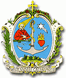

- Parlano i genitori
- Parlano gli ex alunni
- Comunità Salesiana
- Santità salesiana
- Movimento Giovanile Salesiano
- VIS
- salesiani cooperatori
- Ex-allievi di Don Bosco
Che significa la sigla “SDB”?
“SDB” vuol dire “Salesiani di Don Bosco”.
Che significato ha essere “Salesiano di Don Bosco”?
Essere 'Salesiano di Don Bosco' significa entrare in una Congregazione Cattolica di persone che dedicano tutta la loro vita a Dio attraverso il generoso servizioai giovani, specialmente i più poveri e disagiati. Si entra in questa forma di vita con la professione dei voti religiosi, vivendo in comunità, educando ed evangelizzando i giovani secondo l'esempio di Don Bosco.
Perché il nome di 'Salesiani di Don Bosco'?
San Giovanni Bosco - E' Santo Italiano del secolo diciannovesimo – i suoi ragazzi lo chiamavano DON BOSCO e “DON” in italiano significa “Sacerdote”. E continua ad essere chiamato così anche ai nostri giorni. Egli fondò una Congregazione la cui finalità è prendersi cura dei giovani specialmente i più poveri. Egli chiamò coloro che “ lo vollero seguire”, Salesiani, nome che deriva da San Francesco di Sales, un Santo molto popolare nell’Italia del Nord, dove nacque Don Bosco. Egli scelse San Francesco di Sales come patrono della sua Società e volle che i suoi collaboratori ne imitassero la sua grande umanità.
Ci sono altre associazioni con il nome di “Salesiani di Don Bosco”?
Sì. Ci sono altri gruppi che portano il nome di “Salesiani”. San Francesco di Sales, dottore della Chiesa Cattolica, diede origine a una scuola di spiritualità che normalmente viene riconosciuta come “Spiritualità Salesiana”. Ci sono gruppi che vivono questa stessa spiritualità e si considerano essi stessi “Salesiani”. Il titolo “Salesiani di D. Bosco” si riferisce a tutti coloro che vivono la spiritualità di San Francesco di Sales secondo lo stile e carisma di Don Bosco.
Qual è la situazione o stato legale dei Salesiani di Don Bosco?
I “ Salesiani di Don Bosco” formano una Congregazione senza fini di lucro. E’ riconosciuta dal Governo Italiano, come persona giuridica per finalità civili sotto il nome di “Direzione Generale Opere Don Bosco” – domiciliata in Roma, Via della Pisana 1111.
Dove sono presenti i Salesiani di Don Bosco nel mondo e quanti sono?
I Salesiani di D. Bosco sono presenti in 128 Paesi del pianeta . Attualmente i Salesiani sono 16.583. Sono attivi nel campo giovanile in oltre 2.000 istituzioni. Consulta anche il sito della Congregazione www.sdb.org
Qual è lo scopo dei Salesiani di Don Bosco?
Lo scopo dei Salesiani di D. Bosco può essere riassunto brevemente così: “Essere segno e portatori dell’amore di Dio ai giovani, specialmente i più poveri”
Come operano i Salesiani di D. Bosco a servizio della gioventù?
Qui c’è una lista di progetti in favore della gioventù portati avanti dai Salesiani di D. Bosco nel mondo Scuole di vari gradi accademici. Scuole Agricole, Collegi, Università, Oratori e Centri Giovanili, Parrocchie, Missioni, Movimenti Giovanili, Case Editrici, Centri di Comunicazione Sociale, Produzione di Multimedia , Cine Forum, Teatro e Circoli Musicali, Circoli Polisportivi, Scuole di Arti Grafiche, Pubblicazioni, Programmi di Educazione alla Pace e Democrazia, Centri Catechetici, Progetti di sviluppo rurale, Centri per Ragazzi di Strada, Asili, Centri di Riabilitazione, Centri di Orientamento, Centri di Recupero per tossicodipendenti, Centri per Rifugiati, Centri Vocazionali, Centri di Volontariato, Agenzie di raccolta fondi, Centri di Ricerca Giovanile e Sviluppo.
I Salesiani si sposano?
No. I salesiani di Don Bosco non si sposano. Essi vivono una vita consacrata (al bene dei giovani).
Che cosa s’intende per “Vita Consacrata”?
Nella Chiesa Cattolica, una persona può dedicare la sua vita al Signore, in totale libera scelta. Questa consacrazione fatta per tutta la vita si manifesta mediante la professione pubblica di tre voti: Obbedienza, Povertà, e Castità.
Che significano i tre voti?
I tre voti sono un segno mediante il quale ci si mette totalmente a servizio di Dio e della Sua missione per rendere possibile e realizzare nel mondo la pace, la verità, la giustizia e l’amore. Con la emissione dei tre voti, il candidato rinuncia ad alcuni legittimi diritti che ha come essere umano – il diritto di libere scelte e decisioni , il diritto di legittime proprietà (beni) , il diritto di sposarsi ed avere la sua famiglia.
I Salesiani fanno i voti per un periodo determinato di tempo?
No. La Consacrazione è fatta per tutta la vita. La Chiesa Cattolica, comunque, richiede che il candidato emetta i voti per un periodo di tempo con l’intenzione, più avanti, di consacrarsi per sempre. Questo periodo di tempo è conosciuto come “professione temporanea” la quale culmina con la “professione Perpetua”; dopo circa 7 anni.
Nel mondo moderno, è ancora possibile una “Vita Consacrata” per sempre?
Non è certo una impresa facile vivere la vita consacrata, i tre voti, giorno dopo giorno. Ma è senz’altro possibile con l’aiuto e la grazia di Dio, appoggiandosi alla preghiera costante, alla pratica dei Sacramenti e all’osservanza delle Costituzioni di D. Bosco. Vissuta così in comunità con altri Membri che hanno fatto la stessa professione la vita è più che possibile. E’ una vita vissuta in un gioioso impegno per il Regno di Dio – e oltre ad un impegno, è davvero un’avventura che vale la pena di vivere.
Tutti i SDB sono Sacerdoti ?
No. Non tutti i Salesiani sono Sacerdoti. La vocazione è essere Salesiani di Don Bosco e questa vocazione può essere vissuta in due forme: come Confratello Laico o Coadiutore; o come Sacerdote. Queste due forme sono complementari – si completano a vicenda.
Che ha di speciale il Salesiano Coadiutore?
Il Salesiano Laico o Coadiutore, come il sacerdote, emette i tre voti di Povertà, Castità e Obbedienza. Vive la vita di Comunità con gli altri Confratelli Salesiani, e vive la stessa missione a servizio dei giovani modellando la sua vita su Cristo Buon Pastore e facendo suo il sistema di don Bosco nel campo educativo. La differenza consiste nel fatto che il suo lavoro si svolge soprattutto in attività di natura secolare. Ecco alcuni campi in cui il Salesiano Coadiutore sviluppa maggiormente la sua vocazione: Educatore, Medico, Professore, Perito Agrario, Direttore di progetti per lo Sviluppo, Amministratore, Ragioniere, Catechista, Guida Scout, Pubblicista, Bibliotecario, Architetto, Tecnico Informatico , Allenatore sportivo, Musico ecc. . Attualmente i Salesiani Coadiutori nel mondo sono 2221.
Che ha di speciale il Salesiano Sacerdote?
Come il Confratello Coadiutore, il Salesiano Sacerdote, emette i tre voti di Castità, Povertà e Obbedienza e vive in Comunità con gli altri Salesiani e dedica la sua vita al servizio della gioventù modellando la sua esistenza sull’ esempio di Cristo il Buon Pastore, seguendo l’esempio e il carisma di San Giovanni Bosco nel campo della educazione . A differenza del salesiano coadiutore, il Sacerdote si dedica in modo particolare al Ministero proprio del Sacerdote: predicare il Vangelo e amministrare i Sacramenti.
Come si diventa o ci si fa Salesiani?
Dopo aver scoperto la propria vocazione, per essere Salesiani di Don Bosco si devono seguire alcune fasi o momenti successivi:
- Il prenoviziato per approfondire l’opzione vocazionale iniziale e prepararsi al noviziato
- Il Noviziato: come inizio dell’esperienza religiosa;
- Il postnoviziato: che aiuta a crescere nell’integrazione di fede, cultura e vita.
- Tirocinio Pratico: che mira alla sintesi personale nel confronto vitale e intenso con l’azione salesiana
- Formazione specifica: che completa la formazione iniziale e che, per i seminaristi si prolunga fino all’ordinazione sacerdotale;
- Periodo di preparazione alla professione perpetua che verifichi la maturità spirituale da essa richiesta e conduce a un impegno definitivo.
Quanto tempo dura il processo per diventare Salesiani?
Partendo dal prenoviziato fino ai voti perpetui ed essere quindi Membro della Congregazione Salesiana– circa 7 anni. Il Sacerdote Salesiano – riceve la ordinazione – normalmente – quattro anni dopo la Professione Perpetua
Quali sono alcuni segni di discernimento di vocazione salesiana?
Ecco alcuni segni significativi di una vocazione Salesiana:
- Grande desiderio di seguire Cristo più da vicino.
- Prontezza di consacrarsi al Signore per tutta la vita
- Amore genuino per i giovani e desiderio di servire i giovani, specialmente i più poveri
- Spirito di generosità e si sacrificio e volontà di superare gli ostacoli della vita
- Capacità di vivere in comunità, condividendo tutto con i Confratelli
- Atteggiamento di ottimismo, creatività e iniziativa.
Quali sono i requisiti minimi per essere Salesiano?
- Avere 18 anni
- Essere cattolico
- Aver terminata le scuole medie inferiori
- Buona salute e buon carattere
- Ci sono altri requisiti ma dipendono da ciascuna Ispettoria.
E le Donne? Possono essere Salesiane di Don Bosco?
No. Ma possono far parte della Congregazione delle Suore che si chiamano “Figlie di Maria Ausiliatrice” – sigla: FMA.
Chi sono le FMA?
Don Bosco assieme a Santa Maria Domenica Mazzarello fondarono le “Figlie di Maria Ausiliatrice” o FMA, nel 1872. Sebbene formino una entità giuridica a parte, condividono lo stesso spirito , carisma e missione dei Salesiani di Don Bosco .Loro campo specifico è l’educazione delle ragazze e giovani, specialmente le più povere. Ulteriori informazioni si possono avere nel sito www.cgfmanet.org
E gli sposati? Possono gli sposati condividere lo spirito e la missione salesiana?
Si, possono. Oltre ai SDB e alle FMA, Don Bosco fondo una associazione chiamata : Associazione dei Cooperatori Salesiani” Essi sono dei Laici , celibi o sposati, che pubblicamente promettono di vivere il carisma e la spiritualità salesiani nella loro vita quotidiana. Essi si sforzano per essere cattolici fedeli e impegnati seguendo la vocazione salesiana. Ulteriori informazione a riguardo: cooperatori.sdb.org
Se io sono un ex-allievo dei salesiani o delle FMA, potrei partecipare nella missione di D. Bosco?
Don Bosco era assai felice di avere come collaboratori i suoi ex-allievi nella missione verso i giovani poveri dopo che questi avevano lasciato le istituzioni educative ed erano entrati nel mondo del lavoro. Grazie alla iniziativa di un ex-alunno, Carlo Gastini , vide questo sogno realizzato. E nacque la Federazione Mondiale degli ex- Allievi di Don Bosco. La Confederazione ha le due branche – quella maschile e quella femminile. Entrambe sono riconosciute come associazioni civili mondiali. L’Associazione è aperta a tutti gli ex-allievi dei Salesiani e delle Figlie di Maria Ausiliatrice. Ulteriori informazioni: exallievi@sdb.org.
Posso esser un Salesiano Consacrato e vivere nel mondo senza stare in comunità?
Sì. Si possono emettere i tre voti di castità, povertà e obbedienza e vivere la propria vita nel mondo. Le donne che desiderano vivere questo stile di vita sono chiamate Volontarie di D. Bosco (VDB) – ulteriori informazioni : www.volontariedonbosco.org. Per gli uomini l’associazione si chiama: Volontari con Don Bosco (CDB) . Ulteriori informazioni: www.volontaricondonbosco.org
Se non sono cattolico, posso ugualmente condividere la missione di D. Bosco?
Ci sono migliaia di persone in tutto il mondo che non sono cattoliche, e tuttavia collaborano da vicino con la missione di Don Bosco. Alcuni sono ex-allievi che possono essere o non essere iscritti alla Confederazione. Altri sono Membri perché lavorano in Istituzioni Salesiane, e fanno del loro meglio e i loro servizi sono retribuiti. Altri ancora danno generosamente il loro tempo e talenti, per creare un ambiente più sano per i giovani nei Paesi in cui vivono. Collaborare con la missione di Don Bosco è un invito aperto a tutti coloro che credono nello sviluppo educativo della gioventù. Se tu vuoi impegnarti in questo servizio, contatta la più vicina istituzione salesiana per maggiori informazioni.
Che altri gruppi fanno parte della “Famiglia Salesiana” nel mondo?
Ufficialmente nel mondo ci sono 21 gruppi che fanno capo alla Famiglia Salesiana: sono qui inclusi i SDB. Le FMA. I Cooperatori salesiani e due branche della Confederazione degli Ex- Allievi. Il carisma di Don Bosco continua a ispirare persone di buona volontà. Ci sono inoltre, altri 27 gruppi che vorrebbero far parte della Famiglia Salesiana. Da uno sguardo alla lista complete in: Membri della Famiglia Salesiana.